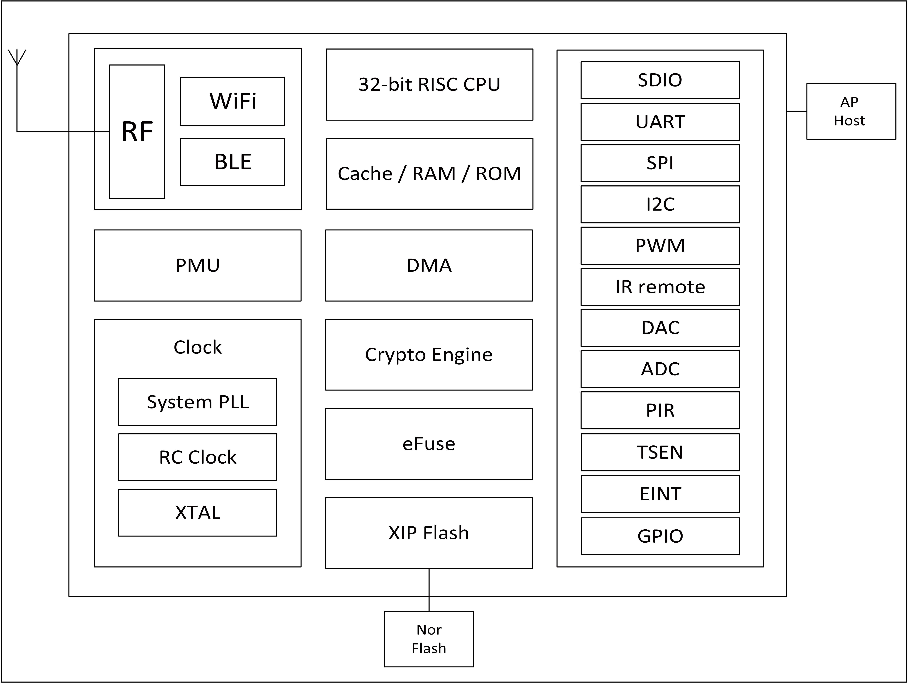

1. 概述¶
BL602/BL604 是一款Wi-Fi + BLE组合的芯片组， 用于低功耗和高性能应用开发。 无线子系统包含2.4G无线电，Wi-Fi 802.11b/g/n和BLE 5.0 基带/MAC设计。 微控制器子系统包含一个低功耗的32位RISC CPU，高速缓存和存储器。 电源管理单元控制低功耗模式。 此外，还支持各种安全性能。
外围接口包括SDIO，SPI，UART，I2C，IR remote，PWM，ADC，DAC，PIR和GPIO。

功能框图
1.1. 无线¶
- 支持IEEE 802.11 b/g/n协议
- 2.4 GHz频带1T1R模式，支持20 MHz，数据速率高达72.2 Mbps
- Wi-Fi 安全WPS/WEP/WPA/WPA2 Personal/WPA2 Enterprise/WPA3
- 无线多媒体(WMM)
- 帧聚合(AMPDU,AMSDU)
- 立即块回复(Immediate Block ACK)
- 分片和重组(Fragmentation and defragmentation)
- Beacon自动接收(硬件TSF)
- 硬件支持6 × 虚拟Wi-Fi接口
- 支持Station模式、SoftAP模式、Station + SoftAP模式、Sniffer模式
- 支持多个云同时接入
- 集成balun，PA/LNA
- Bluetooth低能耗 5.0，Bluetooth Mesh
- BLE协助实现Wi-Fi快速连接
- Wi-Fi和BLE共存
- 支持BLE 5.0通道选择＃2
- 不支持2M PHY /编码PHY / ADV扩展
1.2. MCU子系统¶
- 带FPU（浮点单元）的32位RISC CPU
- 一级缓存
- 1 个 RTC 计时器，最长计数周期为 1 年
- 两个32位通用定时器
- 四个DMA通道
- DFS（动态频率缩放）从1MHz到192MHz
- 支持JTAG开发调试
- 支持XIP QSPI Flash启动，内置镜像解密单元
1.3. 存储¶
- 276KB RAM
- 128KB ROM
- 1Kb eFuse
- 嵌入式Flash闪存 (选配)
1.4. 安全机制¶
- 安全启动，支持使用ECC-256签名的镜像
- 安全调试端口
- 支持QSPI/SPI Flash即时AES解密（OTFAD）,支持 AES128 CTR模式
- 支持AES 128/192/256位加密引擎
- 支持SHA-1/224/256
- 真实随机数发生器(TRNG)
- 公钥加速器(PKA),支持大数基本运算,软件提供签名，验证等应用程序接口
1.5. 外设¶
- 1路SDIO2.0从机
- 1路SPI主/从机，最高速度可达40Mbps
- 2路UART，最高波特率可达10Mbps,支持RTS/CTS流控
- 1路I2C主机，最高速速度可达3Mbps
- 5路PWM通道，最高输出频率可达40MHz
- 2路 10-bit 通用DAC，最高转换速度可达512Ksps
- 12路 12-bit 通用ADC，最高转换速度可达2Msps
- 2路通用模拟比较器（ACOMP），可作为CPU睡眠唤醒源
- 1路PIR（被动红外）检测，可作为CPU睡眠唤醒源
- 1路Infrared Remote 红外遥控，支持NEC RC5协议
- 16或23个GPIO
1.6. 电源管理模式¶
- 关闭
- 休眠（多种模式可配）
- 掉电睡眠（多种模式可配）
- 正常运作
1.7. 时钟架构¶
- 支持外部晶振频率24/32/38.4/40MHz
- 内置RC 32kHz振荡器
- 内置RC 32MHz振荡器
- 内置系统PLL
- 支持外部XTAL 32kHz 晶振